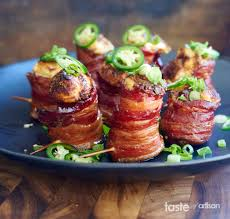

Jalapeno Popper Pig Shots
These jalapeno popper pig shots are like edible shot glasses. The combination of salty crisp bacon, caramelized sausage, and the kick from the jalapeno is just perfect. Serve at your next football party or get-together.
Ingredients:
- 1 lb smoked sausage, sliced into 24 pieces, about 3/4 -1 inch thick
- 4 ounces cream cheese, softened
- 1 1/2 cups sharp Cheddar cheese
- 1/2 teaspoon Cajun seasoning
- 2 tablespoons sour cream
- 3 jalapenos, divided
- 1 lb (12 slices) thick cut bacon, cut in half
- 1/4 cup spicy bbq sauce
- 1 tablespoon honey
- 1 tablespoon brown sugar
Directions:
- Preheat the oven to 375 degrees F (190 degrees C)
- Combine cream cheese, Cheddar cheese, Cajun seasoning, and sour cream in a bowl. Seed and finely chop 1 jalapeno and add to cheese mixture. Stir until well combined. Place cheese mixture into a large ziplock bag.
- Snip the corner of the bag and pipe about 2 teaspoons of cheese mixture onto each piece of sausage. Wrap each sausage with bacon and place into mini muffin pan cups. Slice remaining jalapenos into 24 thin slices and top each “shot” with a slice.
- Stir together bbq sauce, honey, and brown sugar in a small bowl. Brush bbq mixture over pig shots and bake until the bacon gets crisp, about 45 minutes.
- Remove from oven and let cool before serving, 5 to 10 minutes. They will crisp slightly more after baking.